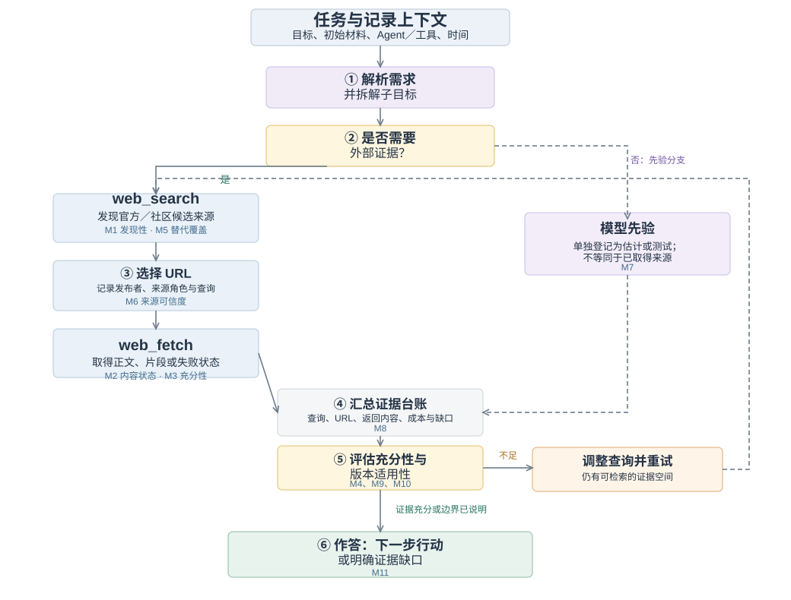
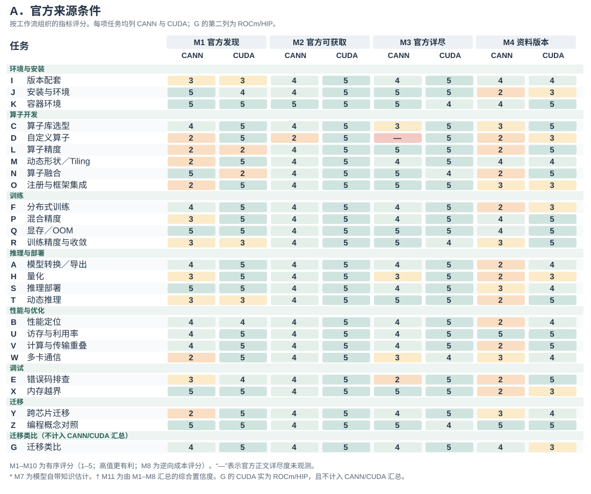
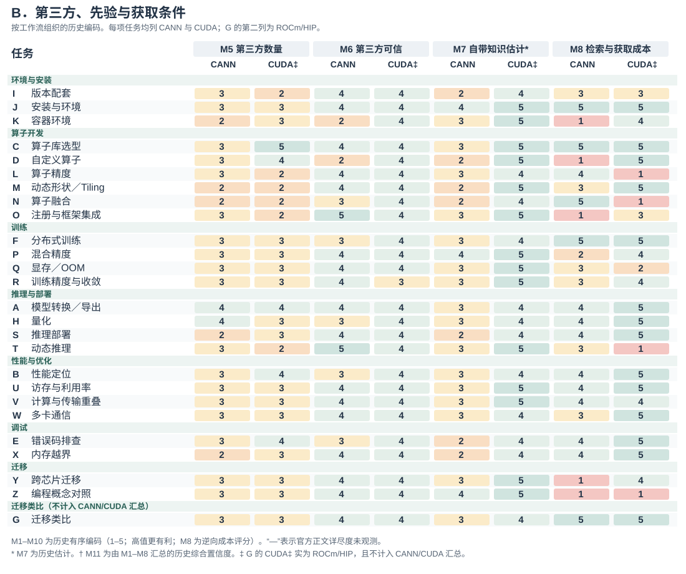
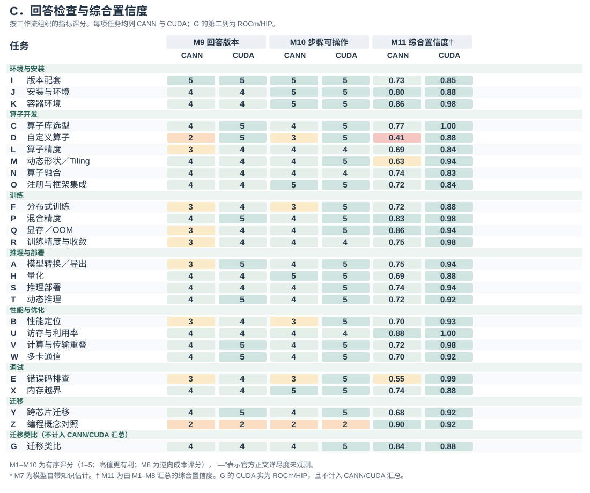
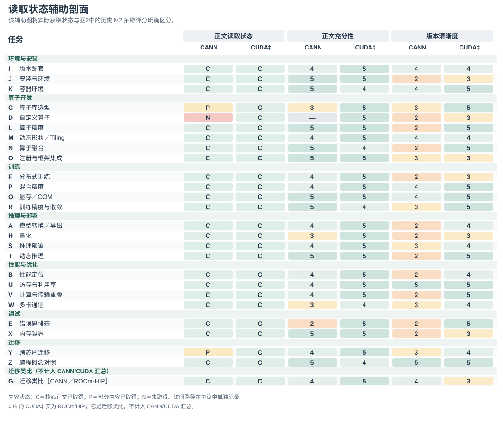

AI Agent 正日益成为开发者获取技术知识的中介。然而，技术资料的存在并不意味着 Agent 能够发现相关来源、获取所需内容，并据此形成充分且适用的开发指导。本文定义面向 AI 的知识可得性，并通过任务级协议将其操作化为十一项指标，涵盖来源触达、内容详尽度、适用性、检索与获取成本与回答检查。我们回顾性地应用这一方法，使用覆盖 26 项加速器开发任务的记录，其中包括 25 组 CANN/CUDA 任务对，以及一项单独标明的迁移类比。具体案例区分了无法取得的操作指南、能够取得但不够详尽的解释、替代访问路径，以及尚未解决的版本依赖。应用过程也揭示了需要明确处理的测量选择，包括来源归属、推断的模型知识和综合评分的饱和效应。本文贡献包括一个概念框架、一套可检查的操作化方案，以及通过案例对其诊断范围的考察。该方法结合知识来源、获取过程，以及回答的版本明确性与步骤可操作性，形成面向开发任务的多维知识可得性评价。
面向 AI 的知识可得性；开发者生态；技术文档；信息寻径；AI Agent；测量方法
开发者在决定下一步行动时，常常往返于文档、代码示例、搜索结果和社区解释之间。关于机会式编程和开发者信息需求的研究表明，寻找与解释信息本身就是编程活动的一部分 [2, 6, 12]。有用的信息必须契合当前任务：命令需要正确的选项，API 示例需要对应的版本，错误解释需要提供足够的上下文来指导排查。因此，文档的存在只是其有用性的一个条件。
具备检索与工具调用能力的开发 Agent 为这一知识环境增加了一条协作路径。开发者既可以围绕报错或局部代码提出问题，也可以描述待完成的变更或结果目标，将资料查找、文档阅读、实现步骤组织以及部分代码修改委派给 Agent。为推进任务，Agent 可能自行在官网、文档、仓库与社区之间搜索、读取和整合材料，再起草回答、实现方案或代码改动。关于代码生成工具、对话式编程辅助和 Agent 支持的研究既描述了这种支持带来的机会，也揭示了理解和核验生成建议的困难 [1, 10, 13]。委托信息寻找并不会消除对适用证据的需求。它改变的是谁接触文档、通过什么界面接触，以及哪些信息最终到达开发者。
设想 Agent 被问到如何实现并集成一个自定义加速器算子。搜索可能返回官方开发指南，但阅读工具只取得导航和元数据。在错误诊断任务中，同一工具可能取得完整的官方页面，页面却只有一条笼统的查看日志指令。检索成功指标可能将这两个问题都记为已有相关结果。访问指标能够区分第一种失败，却无法区分第二种。即便操作说明足够充分，若其引用了彼此不兼容的工具包与框架版本，也仍可能存在歧义。这些区别关系到文档团队应修复什么，以及 Agent 设计者应向用户暴露哪些不确定性。
现有评估方法已经区分了检索质量、上下文相关性、答案忠实度及其他相关属性。RAGAS 和 ARES 提供了对检索增强生成各组件的评估，ALCE 则考察生成答案及其引用 [3, 4, 11]。本文处理的是一个互补的测量问题：如何检查 Agent 在处理具体开发任务时遇到的技术知识条件，包括访问失败、版本关系、替代来源，以及审计者判断的依据。这要求把开发者的信息需求与实际取得的资源联系起来，而不是从流畅的回答推断知识可得性。
我们将面向 AI 的知识可得性定义为：在明确的检索条件下，一个指定的 Agent 及工具配置能够发现、取得任务相关技术知识，并评估其适用性的程度。这是一个关系性构念：它涉及特定时点上的任务、知识环境，以及访问该环境的方式。我们通过证据记录协议和十一项指标将其操作化。这些指标区分来源条件、获取成本、产出检查，以及可选的启发式汇总；它们并不是对某一潜在能力的十一项独立测量。
本文提出两个研究问题。RQ1： 如何定义并操作化面向 AI 的知识可得性，使任务特定的访问条件与证据缺口能够被系统记录和复核？RQ2： 该方法在开发任务案例中支持哪些诊断，而记录、编码和汇总选择又如何限定这些诊断的范围？
我们通过一个方法框架，以及对既有加速器开发审计的回顾性应用来回答这些问题。档案包含 26 类任务和 52 条任务侧记录。其中，25 类任务比较 CANN 与 CUDA 开发情境；一类迁移任务以 ROCm/HIP 为对照目的地，单独处理。本文的贡献是方法及其可检查的应用，而非加速器生态的长期排名。具体贡献包括：（1）一个将知识条件与检索成功、答案正确性区分开的构念；（2）一套任务级协议、指标定义和可移植的分析材料；（3）具体案例和对测量假设的考察，说明该方法能够诊断什么，以及哪些方面仍需进一步验证。
信息寻径理论将信息寻找行为与可用信息的结构和预期价值联系起来 [8]。编程研究展示了开发者如何交织进行搜索、学习和实现，以及他们的问题如何依赖于正在开展的工作 [2, 6, 12]。API 学习中的困难也促使研究者关注技术接口周围的解释性资源 [9]。这些研究支持本文以任务为分析单位，并区分接触到某项资源与取得任务所需信息这两件事。
本文方法不从机器访问情况推断人类可用性。浏览器能够读取的页面可能对某个特定抽取工具不可访问；反过来，Agent 容易抽取的文本也可能让人难以导航。我们考察的是受委托的知识获取路径所面对的条件。关于开发者时间、信任、满意度或任务完成情况的主张，需要另外的证据。
关于代码生成与对话工具的研究考察了开发者如何使用和评价 AI 辅助 [1, 10, 13]。这些工作提供了本文的交互背景：技术建议进入开发活动后，其适用性必须得到评估。我们首先关注支撑这些建议的知识是否可得，再讨论人们如何使用建议。
Agent 能够交织推理与工具使用，而检索增强生成提供了将外部信息纳入生成过程的方式 [7, 15]。WebArena、SWE-bench 和 SWE-agent 在贴近真实的网页与软件工程情境中评估或开发 Agent [5, 14, 16]。其任务结果是系统表现的重要证据。本文框架则对这些系统运行时面对的知识条件提供互补描述。失败可能涉及证据不可得、对可得证据的解释不充分，或执行不成功；本文方法直接处理其中第一类问题，并记录有助于区分这些情形的信息。
RAGAS 和 ARES 评估检索上下文与生成答案的属性；ALCE 评估有引用支持的生成 [3, 4, 11]。因此，我们并不声称既有评估将检索或答案质量视为不可拆分的整体。本文方法关注的是技术任务需求、获取过程与周围知识生态结构之间的联系。在这一情境中，版本兼容性、对操作指南的部分访问，以及对社区变通方案的依赖尤为重要。
表 1 中的区分界定了这一构念的位置。知识可得性可以是基于证据作答的必要条件，却不足以保证正确性。Agent 可能误解一个可得来源，也可能在未取得任何外部证据的情况下，凭先验知识给出正确答案。这些结果应保持可区分。
| 评估对象 | 核心问题 | 与本文方法的关系 |
|---|---|---|
| 检索成功 | 是否返回了相关结果？ | 获取过程的一个条件；不能证明所需内容已被取得。 |
| 文档可用性 | 目标读者能否导航和理解这些材料？ | 相关的面向人类的属性，需要单独评估。 |
| 面向 AI 的知识可得性 | 在所记录条件下，哪些任务相关知识能够被取得？ | 本文所操作化的构念。 |
| 答案正确性与归因 | 回答是否正确，其来源是否支持其中的主张？ | 可以使用已取得证据进行的下游评估。 |
| 执行成功 | 所提出的行动能否在目标环境中奏效？ | 需要执行或其他独立的结果证据。 |
分析单位是一次任务侧知识获取过程：使用明确的 Agent 和检索配置，在特定技术生态中围绕一个开发目标开展知识获取。任务说明记录期望结果、初始材料、约束、版本依赖，以及支撑下一步行动所需的证据。例如，模型转换可能需要转换命令、输入形状说明、目标设备设置，以及检查生成产物的方法。这些需求指导检查；页面长并不自动意味着内容充分。
任务选择必须服务于应用目的。生态评估可能寻求覆盖不同工作流；文档团队的审计可能聚焦反复出现的支持问题。若无进一步的抽样证据，两者都不能说明这些任务在总体中的发生频率。跨生态应用时，分析者应记录初始条件与任务范围的差异，而不是假设名称相近就意味着任务等价。该框架也可用于同一生态内部、不同版本之间或不同检索配置之间，只要比较条件得到明确说明。
图 1 将各项测量放在一条可观察的工具调用循环中。它是一个分析模型，而非对模型隐含推理过程的重建：Agent 先搜索候选来源、选择 URL、读取正文或记录失败，再汇总证据并检查任务充分性与版本适用性。证据不足而仍有可检索空间时，循环回到查询精化；模型先验则作为不产生可观察来源的独立分支登记。因此，先验知识不自动视为可追溯证据。

该框架保留原审计中的三个渠道：官方材料、社区或第三方材料，以及模型先验知识。对于外部渠道，它将访问与充分性分开。发现关注是否找到了候选来源；获取关注阅读工具实际返回了什么；充分性则关注返回内容是否提供了任务所需的命令、解释、参数或诊断案例。版本适用性需要跨渠道考察，因为各个来源可能各自有用，却描述了不同的环境。
官方属性由发布者与材料的关系决定，而非由托管平台决定。厂商的代码仓库或博客属于该厂商的官方渠道；托管在同一平台上、由独立作者撰写的教程则可能具有不同属性。跨平台转载也使域名多样性成为衡量证据独立性的不完善代理。因此，协议保留来源身份、发布者、可获得的日期，以及观察到的衍生或重复关系。缺少这些细节时，应记录为不确定性。
该方法的产出是一份带有证据记录的可得性剖面。它标明找到了什么、取得了什么、哪些内容看起来充分、哪些适用条件仍未解决，以及记录了多少获取成本。可选的汇总指标有助于概括某套操作化方案，但不能取代这一剖面。尤其需要指出，模型内部知识即使能够支持回答，也不能让一个不可访问的外部来源变得可访问。
证据记录将每项判断与其依据联系起来。最低限度的字段包括任务问句与初始条件、已知的 Agent 与工具配置、采集时间、查询和选定 URL、发布者与来源角色、返回内容或保留片段、访问结果、适用版本、内容所支持的任务需求、获取次数，以及编码决定及其理由。另设字段标明条目属于直接记录、后续编码、估计，还是不可获得。
这一区分可以避免一种常见的报告错误：仅仅因为脚本为某个解释赋予了数字，就把解释转化为观测。被记录的抽取失败，是对工具与来源交互的观测；将某段解释判为充分，是对照任务需求作出的判断；估计模型对某个工具包的熟悉程度，则属于推断，除非有单独测试为其提供支持。数值编码不会消除这些差别。
表 2 列出了从审计中保留的指标，并澄清其证据角色。编号保留了与档案数据的对应关系。所提出的操作化方案以内容获取结果衡量访问，将推断的先验知识与已取得来源分开，并把产出检查解释为已记录操作说明的属性，而非成功执行。
| 编号 | 指标 | 证据与解释 |
|---|---|---|
| M1 | 官方可发现性 | 记录查询轮次与官方结果位置；反映所选搜索条件下的发现成本。 |
| M2 | 官方正文可获取性 | 官方核心正文是否已取得、部分取得、未取得或未知；关注返回内容，而非站点实现技术。访问路径另列为原入口、替代入口或未知。 |
| M3 | 官方正文详尽度 | 已取得官方正文中任务所需命令、参数、解释和参考细节的层级；它记录内容细节，不能单独证明任务已经充分解决；内容未取得时，该项未被观察。 |
| M4 | 资料版本清晰度 | 来源材料的明确适用范围、兼容关系，以及尚未解决的版本分支；多个受维护版本本身并不意味着歧义。 |
| M5 | 第三方来源数量 | 官方渠道之外被记录的第三方来源条数；它不是以任务需求为分母计算的覆盖率。 |
| M6 | 第三方来源可信度 | 第三方来源的作者身份、时效、一致性，以及内容衍生关系的线索；域名多样性本身不能证明独立性或逐条内容正确。 |
| M7 | 模型自带知识估计 | 明确标注的估计，或单独开展的无检索测量；本档案包含的是估计，而非实测训练覆盖。 |
| M8 | 检索与获取成本 | 原始检索、读取、重试和查询精化次数；成本模型与这些次数分开披露，并不表示实际耗时、Token 或费用。历史矩阵展示逆向成本评分，填写示例则保留底层调用次数及其编码。 |
| M9 | 回答版本明确性 | 已记录回答或指导是否标明确切组合、受约束的范围，或尚未解决的依赖；不意味着该组合已经运行验证。 |
| M10 | 回答步骤可操作性 | 已记录回答或指导中的步骤能否照用、仅替换参数或经小幅修改采用；不能证明代码已经执行。 |
| M11 | 综合置信度 | 基于 M1–M8 的历史汇总分数；M9–M10 单列呈现。它反映公开的聚合假设，而不是经过校准的正确性或任务成功概率。 |
M1–M6 描述来源条件；M7 登记另一种可能支撑回答形成的依据；M8 描述检索与获取成本；M9–M10 检查回答的版本明确性与步骤可操作性；M11 汇总 M1–M8 的历史编码。这些组成部分可以共同变化，但不能相互替代。它们也不一定适用于所有任务：概念解释任务可能没有有意义的版本锁定需求。此类情况需要明确的“不适用”状态，而非虚构一次成功观测。
第一，定义任务与记录边界。 说明开发结果、初始材料，以及评估充分性所依据的需求。记录 Agent、工具、语言、日期和上下文策略。明确分析单元包含新开展的获取、复用的观测，还是两者兼有。设置适合该应用的检索预算或其他可观察的停止标准；分析者不能仅根据查询次数，推断 Agent 停止的内部原因。
第二，记录发现与获取。 保留查询、候选来源、选定 URL 和阅读结果。检查官方材料，并记录实际遇到的社区替代来源，无论它们来自混合搜索结果，还是后续搜索。将阅读失败与搜索失败分开。当镜像或另一个版本提供了所需内容时，将其与原始尝试关联，使绕行方案保持可见。
第三，评估任务支持与适用性。 将已取得材料映射到任务需求。区分已返回但缺少必要内容的文档，与从未返回的文档。记录明确标注的版本和兼容依赖，包括尚未解决的本地事实。URL 中的版本号是一条线索，本身并不是已经核验的兼容关系。
第四，保留依据地编码。 应用公开的锚点，保留观测到编码的映射，并标注估计值与缺失字段。内容取得程度有四种状态：核心内容已取得；部分内容已取得；所需内容未取得；未知。访问路径另记为原入口、替代入口或未知。因此，经替代入口取得完整镜像正文时，内容仍为“核心正文已取得”，而不会仅因入口变化被降为部分内容。充分性可以使用有序锚点，从笼统片段、概述、可用的主路径材料，到详尽的任务相关参考材料。编码理由应指出覆盖了哪些具体需求，而不应只依赖页面长度。
第五，检查操作说明并报告剖面。 若最终回答得到保留，将其关键步骤与版本主张映射到已取得证据。若只保留了关于可能操作说明的笔记，则将 M9–M10 明确标为对这些笔记的判断。报告矛盾、来源依赖与缺乏支持的步骤。若包含汇总指标，应报告公式、缺失数据处理方式，以及对假设的依赖。配套的填写示例明确呈现从需求到事件、来源、留存证据及编码的链条，并将原始调用次数与 M8 成本编码并置。对不完整档案进行回顾性应用时，最后这一区分尤为重要。
该方法的新意在于将分析单位、证据记录、指标角色与诊断解释连接为一套明确规定。搜索排名、阅读成功与版本标签都是熟悉的观测。它们在这里的价值来自与一个开发任务需求的联系，以及保留观测如何转化为诊断的过程。
档案中的实现将大多数字段映射到五个有序等级。例如，官方可发现性综合第一条官方结果的大致位置与是否需要再次搜索；官方正文详尽度区分片段、概述、主路径材料与详尽参考材料；资料版本清晰度使用观察到的版本数量及兼容矩阵是否存在。这些是操作化选择，并非天然具有等距性质的测量区间。尤其是版本规则，它是一种代理：更多版本既可能体现完善的历史归档，也可能意味着尚未解决的适用性问题。
档案还定义了一个综合置信度。对于历史评分 ，它使用 ；当官方正文详尽度因未取得正文而不可观察时，官方分支的相应贡献记为零：
这一采用噪声-OR 形式的表达式体现了一种设计直觉：不同渠道可能相互补偿。但其中的因子是有序评分的变换，而非经过校准的概率，来源独立性也未得到证实。因此， 保留为综合置信度：它汇总 M1–M8 的历史编码，M9–M10 则作为回答层检查单列呈现。即使在历史计算中，不可得分支的贡献记为零，未知的内容质量仍然是未知。
档案中的 M2 规则赋予静态页面高于服务端渲染页面的值。我们保留这条规则仅为重现历史指数；上述协议不论渲染技术如何，都评估实际返回的内容。这一区分既保留了历史记录，也避免推荐一种缺乏依据、按实现技术扣分的做法。该指数作为一种可以审计的汇总选择呈现，而剖面与具体证据链承担本文的方法论论证。
本次应用使用一项记录于 2026 年 6 月 10–11 日的开发任务审计。它覆盖环境配置、算子开发、训练、推理与部署、性能分析、调试和迁移。示例包括模型转换、自定义算子集成、分布式初始化、版本兼容和内存错误排查。任务集旨在覆盖工作流，并非通过抽样估计开发者遇到这些需求的频率。开发者角色分组用于组织任务场景，覆盖不同角色的典型知识需求。
CANN 与 CUDA 提供了有用的应用情境，因为这些任务涉及专门的 API、工具链、框架集成和版本依赖。任务问句使用各生态的术语。这形成了情境化比较，而非对等价 API 的受控替换。例如，在任务 A 中，CUDA 问题从 PyTorch 模型出发，询问 TensorRT 部署路径；CANN 问题则从 ONNX 模型出发，询问 ATC 转换。在解释成本与完整性时，这些范围差异必须保持可见。
任务 G 是一项独立的迁移类比。其对照问题涉及将 CUDA 代码迁移到 AMD ROCm/HIP，官方材料来自 AMD。它作为具体迁移案例保留在 26 项任务的档案中，但不纳入 CANN/CUDA 汇总比较，因此这些汇总使用 25 对任务和 50 条任务侧记录。对它的单独处理说明了为什么来源身份与比较对象身份应纳入测量协议。
证据包括过程日志、结构化观测字段与评分函数、交互式任务矩阵、指标定义和分析可视化。过程日志以不同的详细程度保留了问句、查询字符串、来源描述、阅读结果和编码解释。初始任务包含较长的逐步记录；后续任务通常使用更紧凑的摘要。部分早期阅读评估引用了原会话中已经获得的观测。因此，这份档案应被理解为一份持续演进的审计记录，而非 52 次统一隔离的实验试次。
前两批覆盖 A–D 和 E–H。后续批次通过并行子 Agent 覆盖 I–S 和 T–Z，其结构化观测在主会话中汇总。日志描述了这一汇总过程中的来源重新归类，也说明后续问句措辞是从原任务分派记录中恢复的。我们按照这一溯源信息保留这些问句，而不将其描述为审计结束后编造的内容。日志所引用的完整会话记录未包含在本文分析的材料中。
记录中的系统被标明为 Claude，使用网页搜索，以及一种对 HTML 进行摘要的网页阅读工具。档案无法确立确切的已部署模型标识、抽取模型版本、搜索提供方配置，或贯穿各次过程的统一停止预算。完整返回与最终回答也未在全部单元中一致保留；M9-M10因此沿用档案对可用指导材料的判断。原解释性可视化中的代码明确属于示意，并未被用来补填这些空缺。这些边界约束了关于重新运行获取过程的主张，但不妨碍对保留观测和计算进行检查。
该框架是在审计过程中形成的，而非作为预注册工具先于审计存在。一次重要修订发生在主路径快速入门返回有用内容之后：此前关于全站访问情况的假设被否定。本文将协议整理成型，并区分观测、估计与汇总选择。回顾性地应用该方法，不会使早期协议变得统一；方法规定与现有案例记录之间的差异，也是方法评估的一部分。
在主比较的 25 条 CANN 任务侧记录中，22 条编码为已取得核心正文，2 条为已取得部分内容，1 条为核心正文未取得。对应的 CUDA 记录均被编码为已取得核心正文。冻结档案未能一致保留入口是原入口还是替代入口，因此不对路径做追溯推断。图 2–4 呈现全部十一项历史指标，并按环境与安装、算子开发、训练、推理与部署、性能与优化、调试和迁移等工作流分组；G 保留为单独标注的 CANN／ROCm-HIP 迁移类比，不计入 CANN/CUDA 汇总。



图 2–4 中 M1–M10 为冻结档案的 1–5 有序编码，M11 为基于 M1–M8 计算的历史综合置信度；其中 M2 是历史官方正文可获取性评分，而非实际正文获取状态。为解释 D 等案例，图 5 将实际获取状态单独保留，使“正文未取得”不会被压缩为一个分数。

档案包含 12 项 CANN 任务，其版本清晰度处于最常观察到的最低等级，这些任务均在主比较中。两个最高版本清晰度编码对应被视为版本不敏感的任务。这一模式将注意力引向适用性证据，也显示为何版本关系必须与内容获取分开记录。
任务 D 询问如何创建 Ascend C 算子并与框架集成。记录描述了搜索结果中存在社区示例与相关框架文档，但选定的官方操作指南返回内容缺少所需正文。这里的诊断是：这条获取路径没有提供核心实现指导。它定位了一种干预方向：通过稳定路径使所需内容能够被访问，并保留哪条路径成功的证据。
任务 E 涉及一个加速器错误码。日志记录了已取得的官方页面，其中包含笼统的内部错误解释、未明确的原因，以及检查安装或查看日志的宽泛指令。这是充分性限制：内容已经取得，但未将任务收窄到具体触发条件或诊断序列。仅修复抽取过程仍无法满足这一需求。对照材料包含更明确的错误语义与社区解释，但不能因此假定两个问题需要相同的诊断成本。
综合 D 与 E，可以看到将 M1、M2 和 M3 分开的诊断目的。仅描述检索命中，无法识别 D 中缺失的官方正文；仅描述访问，又会掩盖 E 缺乏任务特定指导的问题。
在 A 中，CANN 快速入门的返回内容包括 ATC 命令、输入与目标设备参数，以及一个设备信息查询步骤。日志也描述了对更完整参考页面的一次阅读尝试，该尝试没有取得正文。仅看页面级失败次数，无法判断转换任务的主路径是否仍然获得支持。反过来，成功读取快速入门也不能成为将完整参考资料标记为已取得的依据。
这个案例说明了按需求记录的必要性。证据记录可以将已取得的快速入门与它所支持的转换需求关联，同时把高级配置需求保留为未解决。案例还暴露了一个计数问题：结构化记录列出三次阅读、零次失败阅读，而过程记录描述了一次参考正文缺失。档案材料无法判断，该计数是否排除了辅助参考资料，还是条目本身存在不一致。我们保留这一差异，而不是默默选定一个新的失败次数。可重现的公式无法修复含糊的计数边界。
任务 I 涉及工具包、框架集成包、驱动及相关组件之间的兼容性。其笔记描述了分布在代码仓库、软件包信息和文档中的可用兼容信息。相关诊断关注的是为了目标组合而连接这些关系所需的工作，而非仅仅指出网上存在多个版本号。该框架明确所需的环境事实，使版本不匹配不必被归因于文本不可得。
任务 X 涉及内存错误排查。档案中的 CANN 记录将已取得的内存检测工具文档评为最高正文详尽度等级，同时记录了有限数量的第三方材料，以及较低的模型自带知识估计。这些观测描述了不同属性。如果官方指南未覆盖后续出现的错误，薄弱的第三方渠道可能产生影响；但这并不能证明已取得的指南不足以回答原问题。因此，该案例支持将第三方来源数量与正文详尽度并列报告，而不能证明社区广度始终是形成可行动答案的必要条件。
这些例子也限制了仅以任务深度解释问题的简单叙事。概念要求很高的优化问题可能拥有可访问且详尽的指导，而看似直接的错误查询却可能缺少有用解释。对生态特定案例的依赖是一种值得进一步考察的合理解释，而非由该档案确立的因果机制。
可移植分析从保留字段重现历史评分，并保存全部 52 条任务侧记录。它还将 25 对比较与 G 分开，并记录已知编码问题。其中一个问题出现在 H：历史字段把一篇 NVIDIA 开发者博客列入替代来源。按照本方法基于发布者的规则，这类材料应属于官方渠道。补充材料标注了这一差异，而没有将历史矩阵默默改写成一套声称已经重新编码的数据集。
这些检查建立了冻结实现的计算可追溯性，并给出可供后续独立编码和跨生态应用复用的字段、映射和差异标注。
对于 25 对任务，历史启发式均值为 CANN .732、CUDA .922。这些值保留了原始编码与汇总假设，提供它们是为了可追溯性，而非作为经过修正的生态质量估计。被排除的迁移类比，以及已标记的来源和计数问题，在补充材料中保持可见。本文不根据这些任务类别推断显著性检验结果或总体层面的排名。
公式本身说明了为什么综合置信度必须伴随剖面。当模型自带知识估计为五时，，无论官方与第三方来源的值如何，渠道组合项都等于一。档案中标记为 CUDA 的 26 条记录有 14 条具有这一性质。因此，一个看起来很高的综合置信度可能对外部证据缺失不敏感。这是实现的数学属性，而非观察到了模型在缺少这些证据时仍能回答的能力。
一次档案敏感性计算将先验贡献设为零、保持其他值不变，使 26 行数据的 CANN 均值从 .736 变为 .606，历史对照列从 .920 变为 .848。这次 26 行计算包含 G，仅为重现原实现的范围。它不是无检索实验，也不测量模型知识。该计算表明绝对评分依赖于如何处理估计的先验，但其本身并不否定来源剖面的价值。
对反事实改进估计也应采取同样谨慎的解释。在公式中提高版本编码，可以揭示所选汇总方式会给哪些已记录任务更高的值，但这并不是对已部署文档改动收益的估计。因此，我们使用该案例检查指数假设，而不根据模拟分数增长规定投入排名。方法的价值在于识别可解释的证据缺口及适当的应对，而非使汇总指标最大化。
该框架识别了开发者将问题委托给 Agent 时可以向其展示的信息：主要来源是否已经取得，哪些版本条件尚未解决，哪些步骤获得了已取得材料的支持，以及仍需哪些本地事实。这些是界面设计的候选内容，并非本研究已经评估的界面功能。“兼容关系尚未确立”这样的状态，比一个没有解释的置信度数字更能指出可采取行动的限制。
这种联系构成了本方法的 HCI 动机。即使开发者没有亲自访问来源，到达交互过程的证据仍会影响他们。文档负责人和 Agent 设计者可以使用共同的任务级记录，区分需要提供可读导出的来源、需要补充诊断示例的指南，以及需要向用户请求环境事实的交互。这些应对分别作用于知识路径的不同位置。
一个有用的任务导向文档单元可以说明预期结果、适用版本、前置条件、最小命令或代码、预期输出与恢复信息。这些要素为审计者提供具体的充分性标准，也为 Agent 提供可引用的材料。访问应在这一单元层面评估，而非由站点所用框架或首页推断。静态 HTML、服务端渲染或文本导出都是实现选项；关键结果是必要内容能够到达指定读者。
版本关系也应得到类似处理。受支持的驱动、工具包、框架与插件组合是一种需要检查的关系，而不仅是一组可识别的版本字符串。明确的兼容表和与任务关联的环境需求，可以减少从彼此割裂的页面拼接这一关系的需要。不过，它们对任务成功的影响仍须通过实际使用或执行来评估。
迁移应用该框架时，分析者替换领域特定任务与充分性需求，同时保留从观测到诊断的结构。数据库 SDK 审计可以检查迁移指南与客户端—服务器兼容性；Web 框架审计可以检查依赖版本与部署前置条件。这些是提出的应用方向，而非额外的实证案例。该框架提供了一种一致记录它们的方式，但并未预先确立迁移有效性。
进一步评估应考察：独立分析者能否得出相近编码，所诊断的缺口是否对应专家对缺失证据的判断，以及相较于更简单的汇总，剖面能否支持更好的修复决策。此类评估不同于仅仅重复运行评分脚本。当前案例建立了一套可检查的操作化方案，并展示它能够表达的区别；更广泛的可靠性、效标效度与实际收益，仍有待检验。
本案例展示了该方法如何区分知识发现、正文获取与任务充分性方面的断点。保留的记录支持检查编码依据和复算评分；部分模型与工具配置未能从现有材料中恢复，因此尚不能评估这些结果在不同配置下的稳定性。独立编码一致性与跨生态适用性有待进一步检验。补充材料提供冻结的观测字段、原始评分实现、任务与溯源表、差异说明，以及用于档案汇总的脚本，以便后续研究在明确配置和独立编码条件下继续评估该方法。
面向 AI 的知识可得性关注的是：任务相关技术知识能否在明确条件下到达 Agent，并可被评估其适用性。我们定义了这一构念，通过十一项指标与证据记录将其操作化，并利用加速器开发案例档案加以考察。这些案例说明了为什么发现、官方正文可获取性、官方正文详尽度、资料版本清晰度与第三方来源数量需要分别处理，也揭示了计数边界、归属选择、推断先验和汇总规则所带来的后果。
本文的方法论贡献是一种将开发需求与可检查证据剖面联系起来的方式。它使文档和 Agent 研究者能够询问哪项知识条件需要关注，同时保留可得证据、生成答案与成功行动之间的区别。这一区分是评估技术知识基础设施如何支持 AI 辅助开发的必要基础。
AI 工具辅助了稿件组织、翻译、语言修订、分析脚本编写和图表制作。案例档案本身通过 AI 辅助检索形成，具体如方法部分所述。AI 生成的建议与档案中的模型先验估计，均不被表述为独立的人类验证。